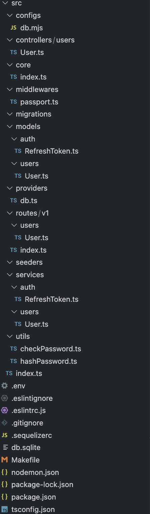
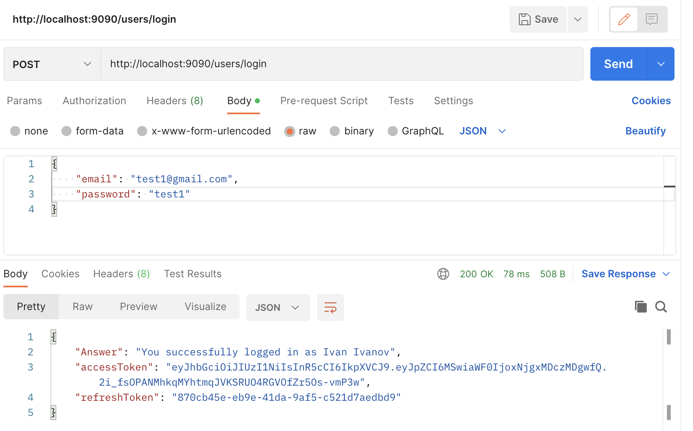

Лабораторная работа № 1
Описание:
Нужно написать свой boilerplate на express + sequelize / TypeORM + typescript.
Должно быть явное разделение на:
- модели
- контроллеры
- роуты
- сервисы для работы с моделями (реализуем паттерн “репозиторий”)
- пример
Структура boilerplate
Скриншот структуры:

Необходимые зависимости
В файле package.json были установлены необходимые зависимсоти:
{
"name": "lr_1",
"version": "1.0.0",
"description": "",
"main": "index.js",
"scripts": {
"test": "echo \"Error: no test specified\" && exit 1"
},
"author": "",
"license": "ISC",
"dependencies": {
"bcrypt": "^5.1.0",
"body-parser": "^1.20.2",
"cors": "^2.8.5",
"express": "^4.18.2",
"passport": "^0.6.0",
"passport-jwt": "^4.0.1",
"reflect-metadata": "^0.1.13",
"sequelize": "^6.30.0",
"sequelize-typescript": "^2.1.5",
"sequelize-typescript-migration-v2": "^0.0.2-beta.6",
"sqlite3": "^5.1.6",
"tcs": "^10.0.2",
"typeorm": "^0.3.13",
"uuid": "^9.0.0"
},
"devDependencies": {
"@types/bcrypt": "^5.0.0",
"@types/cors": "^2.8.13",
"@types/dotenv": "^8.2.0",
"@types/express": "^4.17.17",
"@types/express-session": "^1.17.7",
"@types/flat": "^5.0.2",
"@types/node": "^18.15.11",
"@types/passport": "^1.0.12",
"@types/passport-jwt": "^3.0.8",
"@types/styled-components": "^5.1.26",
"@types/styled-system": "^5.1.16",
"@types/uuid": "^9.0.1",
"@types/validator": "^13.7.14",
"@typescript-eslint/eslint-plugin": "^5.57.1",
"@typescript-eslint/parser": "^5.57.1",
"dotenv": "^16.0.3",
"eslint": "^8.38.0",
"express-list-endpoints": "^6.0.0",
"nodemon": "^2.0.22",
"sequelize-cli": "^6.6.0",
"ts-node": "^10.9.1",
"typescript": "^5.0.4"
}
}
Файлы окружения и конфигурации
.env - содержит переменные окружения
#DATABASE
NAME=db
DIALECT=sqlite
USERNAME=root
PASSWORD=null
STORAGE=db.sqlite
DATABASE_DEVELOPMENT=database_development
DATABASE_TEST=database_test
DATABASE_PRODUCTION=database_production
# JWT
ACCESS_TOKEN_LIFETIME=3000000 # in milliseconds
REFRESH_TOKEN_LIFETIME=36000000 # in milliseconds
# SERVER
PORT=9090
HOST=127.0.0.1
.eslintignore - содержит дериктории, которые не нужно проверять линтером
node_modules
dist
.eslintrc.js - файл конфигурации для ESLint
module.exports = {
"env": {
"browser": true,
"es2021": true
},
"extends": [
"eslint:recommended",
"plugin:@typescript-eslint/recommended"
],
"overrides": [
],
"parser": "@typescript-eslint/parser",
"parserOptions": {
"ecmaVersion": "latest",
"sourceType": "module"
},
"plugins": [
"@typescript-eslint"
],
"rules": {
}
}
.sequelizerc - файл конфигурации для sequelize
const path = require('path')
module.exports = {
'config': path.resolve('src', 'configs/db.mjs'),
'models-path': path.resolve('src', 'models'),
'migrations-path': path.resolve('src', 'migrations'),
'seeders-path': path.resolve('src', 'seeders')
}
nodemon.json - это конфигурационный файл для пакета nodemon
{
"watch": [
"src"
],
"ext": "ts",
"ignore": [
"node_modules",
"src/**/*.spec.ts"
],
"exec": "ts-node ./src/index.ts"
}
tsconfig.json - это файл конфигурации TypeScript, который используется для настройки компилятора TypeScript
{
"compilerOptions": {
"target": "es6",
"module": "commonjs",
"outDir": "./dist",
"strict": true,
"esModuleInterop": true,
"strictPropertyInitialization": false,
"experimentalDecorators": true,
"emitDecoratorMetadata": true,
"allowJs": true,
},
"include": [
"./src/**/*"
],
"exclude": [
"node_modules"
]
}
Структура src
-
configs- содержит файлы конфигурации, в данном случае файл для подключения к базе данных. -
controllers- содержит контроллеры для каждого ресурса, в данном случае контроллер для пользователей. -
core- содержит файлы ядра приложения, такие как файл, который инициализирует Express. -
index.ts- точка входа для запуска приложения. -
middlewares- содержит аутентификацию с использованием Passport.js. -
migrations- содержит файлы миграций для базы данных. -
models- содержит модели для каждой таблицы базы данных, в данном случае модели для пользователей и токенов. -
providers- содержит провайдеры, которые управляют зависимостями, в данном случае провайдер для создания и настройки подключения к базе данных. -
routes- содержит маршруты для каждого ресурса API, в данном случае маршруты для пользователей. -
seeders- содержит файлы начальных данных для базы данных. -
services- содержит службы, которые обрабатывают бизнес-логику приложения, в данном случае служба для пользователей и токенов обновления. -
utils- содержит утилиты, которые используются во всем приложении, в данном случае утилиты для проверки и хэширования паролей.
src/
├── configs
│ └── db.mjs
├── controllers
│ └── users
│ └── User.ts
├── core
│ └── index.ts
├── index.ts
├── middlewares
│ └── passport.ts
├── migrations
├── models
│ ├── auth
│ │ └── RefreshToken.ts
│ └── users
│ └── User.ts
├── providers
│ └── db.ts
├── routes
│ └── v1
│ ├── index.ts
│ └── users
│ └── User.ts
├── seeders
├── services
│ ├── auth
│ │ └── RefreshToken.ts
│ └── users
│ └── User.ts
└── utils
├── checkPassword.ts
└── hashPassword.ts
Модели
User.ts - модель пользователя
import { AllowNull, BeforeCreate, BeforeUpdate, Column, Model, Table, Unique } from 'sequelize-typescript'
import hashPassword from '../../utils/hashPassword'
@Table
class User extends Model {
@AllowNull(false)
@Column
firstName: string
@AllowNull(false)
@Column
lastName: string
@Unique
@Column
email: string
@AllowNull(false)
@Column
password: string
@BeforeCreate
@BeforeUpdate
static generatePasswordHash(instance: User) {
const { password } = instance
if (instance.changed('password')) {
instance.password = hashPassword(password)
}
}
}
export default User
RefreshToken.ts - модель хранения токенов
import { Table, Column, Model, Unique, AllowNull, ForeignKey } from 'sequelize-typescript'
import User from '../users/User'
@Table
class RefreshToken extends Model {
@Unique
@AllowNull(false)
@Column
token: string
@ForeignKey(() => User)
@Column
userId: number
}
export default RefreshToken
Маршруты (routes)
src/routes/users/User.ts - маршруты для пользователя
import express from "express"
import UserController from "../../../controllers/users/User"
import passport from "../../../middlewares/passport"
const router: express.Router = express.Router()
const controller: UserController = new UserController()
router.route('/').post(controller.post)
router.route('/h').get(controller.hello)
router.route('/profile').get(passport.authenticate('jwt', { session: false }), controller.me)
router.route('/profile/:id').get(controller.get)
router.route('/login').post(controller.auth)
router.route('/refresh').post(controller.refreshToken)
router.route('/create').post(controller.create)
export default router
src/routes/index.ts - export
import express from "express"
import userRoutes from "./users/User"
const router: express.Router = express.Router()
router.use('/users', userRoutes)
export default router
Контроллеры
Методы класса UserController:
-
get: Получает идентификатор из параметров запроса, используя метод getById экземпляра UserService, и отправляет данные о пользователе в ответ. -
post: Получает тело запроса, создает пользователя с помощью метода create экземпляра UserService, и отправляет данные о созданном пользователе в ответ. -
me: Возвращает данные о пользователе, полученные из объекта запроса. -
auth: Получает адрес электронной почты и пароль из тела запроса, вызывает метод checkPassword экземпляра UserService для проверки соответствия пароля, генерирует новый токен доступа и токен обновления, и отправляет ответ с токенами и информацией о пользователе. -
refreshToken: Получает токен обновления из тела запроса, проверяет его с помощью метода isRefreshTokenExpired экземпляра RefreshTokenService, генерирует новый токен доступа и токен обновления, используя jsonwebtoken и экземпляр RefreshTokenService, и отправляет ответ с новыми токенами. -
create: Получает тело запроса, хеширует пароль пользователя, используя функцию hashPassword, создает пользователя с помощью метода create экземпляра UserService, и отправляет данные о созданном пользователе в ответ.
src/controllers/users/User.ts
import jwt from 'jsonwebtoken'
import { jwtOptions } from '../../middlewares/passport'
import RefreshTokenService from '../../services/auth/RefreshToken'
import UserService from '../../services/users/User'
import hashPassword from '../../utils/hashPassword'
class UserController {
private userService: UserService
constructor() {
this.userService = new UserService()
}
get = async (request: any, response: any) => {
try {
const user = await this.userService.getById(
Number(request.params.id)
)
response.send(user)
} catch (error: any) {
response.status(404).send({ "error": error.message })
}
}
post = async (request: any, response: any) => {
const { body } = request
try {
const user = await this.userService.create(body)
response.status(201).send(user)
} catch (error: any) {
response.status(400).send({ "error": error.message })
}
}
me = async (request: any, response: any) => {
response.send(request.user)
}
hello = async (request: any, response: any) => {
const html = '<html><body><h1>Hello World!</h1></body></html>';
response.send(html)
}
auth = async (request: any, response: any) => {
const { body } = request
const { email, password } = body
try {
const { user, checkPassword } = await this.userService.checkPassword(email, password)
if (checkPassword) {
const payload = { id: user.id }
console.log('payload is', payload)
const accessToken = jwt.sign(payload, jwtOptions.secretOrKey)
const refreshTokenService = new RefreshTokenService(user)
const refreshToken = await refreshTokenService.generateRefreshToken()
response.send({ 'Answer' : `You successfully logged in as ${user.firstName} ${user.lastName}`,
accessToken, refreshToken })
} else {
throw new Error('Login or password is incorrect!')
}
} catch (e: any) {
response.status(401).send({ "error": e.message })
}
}
refreshToken = async (request: any, response: any) => {
const { body } = request
const { refreshToken } = body
const refreshTokenService = new RefreshTokenService()
try {
const { userId, isExpired } = await refreshTokenService
.isRefreshTokenExpired(refreshToken)
if (!isExpired && userId) {
const user = await this.userService.getById(userId)
const payload = { id: user.id }
const accessToken = jwt.sign(payload, jwtOptions.secretOrKey)
const refreshTokenService = new RefreshTokenService(user)
const refreshToken = await refreshTokenService.generateRefreshToken()
response.send({ accessToken, refreshToken })
} else {
throw new Error('Invalid credentials')
}
} catch (e) {
response.status(401).send({ 'error': 'Invalid credentials' })
}
}
create = async (request: any, response: any) => {
try {
const { body } = request
body.password = hashPassword(body.password)
const user = await this.userService.create(body)
response.status(201).send(user)
} catch (error: any) {
response.status(400).send({ "error": error.message })
}
}
}
export default UserController
Cервисы для работы с моделями
src/services/users/User.ts
import User from '../../models/users/User'
import sequelize from '../../providers/db'
import checkPassword from '../../utils/checkPassword'
const userRepository = sequelize.getRepository(User)
class UserService {
async getById(id: number): Promise<User> {
const user = await userRepository.findOne({ where: { 'id': id } })
if (user) return user
throw new Error(`User with id ${id} not found`)
}
async create(userData: Partial<User>): Promise<User> {
try {
const user = await userRepository.create(userData)
return user.toJSON()
}
catch (e: any) {
const errors = e.errors.map((error: any) => error.message)
throw console.log(errors)
}
}
async checkPassword(email: string, password: string): Promise<any> {
const user = await userRepository.findOne({ where: { 'email' : email } })
if (user) return { user: user.toJSON(), checkPassword: checkPassword(user.dataValues, password) }
throw console.log('Incorrect login/password!')
}
}
export default UserService
src/services/auth/RefreshToken.ts
import { randomUUID } from "crypto"
import dotenv from "dotenv"
import RefreshToken from '../../models/auth/RefreshToken'
import User from '../../models/users/User'
dotenv.config()
class RefreshTokenService {
private user: User | null
constructor(user: User | null = null) {
this.user = user
}
generateRefreshToken = async (): Promise<string> => {
const token = randomUUID()
const userId = this.user?.id
await RefreshToken.create({ token, userId })
return token
}
isRefreshTokenExpired = async (token: string): Promise<{ userId: number | null, isExpired: boolean }> => {
const refreshToken = await RefreshToken.findOne({ where: { token } })
if (refreshToken) {
const tokenData = refreshToken.toJSON()
const currentDate = new Date()
const timeDelta = currentDate.getTime() - tokenData.createdAt.getTime()
if (timeDelta > 0 && timeDelta < parseInt(process.env.REFRESH_TOKEN_LIFETIME!)) {
return { userId: tokenData.userId, isExpired: false }
}
return { userId: null, isExpired: true }
}
return { userId: null, isExpired: true }
}
}
export default RefreshTokenService
Пример работы
- Создание пользователя

- Вход пользователя

- Получение пользователя, если он вошел

- Получение пользователя по id

Вывод
В ходе работы были созданы основные файлы и структура проекта согласно требованиям. Такой boilerplate позволит быстро начать работу над проектом, используя готовые решения и подходы. Разделение на модели, контроллеры, роуты и сервисы позволяет улучшить читаемость и поддерживаемость кода, а также обеспечивает возможность изменения отдельных компонентов приложения без влияния на другие. Также я познакомился как работать с sequelize/TypeORM, typescript и express.